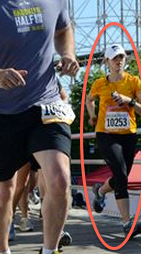

SMALL Data
Running has always been part of my life. I was on my elementary school’s track team and I spent many afternoons during college running the prospect park loop. However, I didn’t take it up with any real discipline until graduate school. A few months after my qualifying exam (big scary oral exam that determines if I can move on to writing my thesis) I decided I needed a new hobby that was not cram-as-much-physical-chemistry-into-my-brain-as-possible (curse you, Fermi’s Golden Rule!) and thus my love of long-distance running was born.
After several half marathons, a marathon, and countless injuries, I’m still going. To that end, when I moved back to NYC to start my postdoc I immediately signed up to be a member of the New York Road Runners (NYRR) and thus my illustrious career of “not finishing last but also not finishing even remotely close to first” was born. I present the photo on the left of me running in the Brooklyn Half Marathon as evidence. Yes, that is the cyclone in the background.
One thing I like almost as much as I like running is data about running. I freak out when I have to run without my trusty GPS watch. Therefore, when I realized that the NYRR compiles “Statistics” on their races, I had to check it out. Here’s the race statistics page for the Brooklyn Half:
Something curious.
Monday, April 1, 2013

Perhaps this all looks very mundane to most of you, but I see something very curious (besides the ridiculous start time... ).
Look at the 40-44 year old age bracket. Of the 1,624 runners who finished the race in that age group only 668 were women. Or just over 40%. On the other hand, for the 25-29 year old age bracket, of the 3,488 finishers, 2,169 were female. That’s over 62%.
Huh, that was a bit perplexing. At first, I thought maybe this race was an anomaly. Nope. All the races show this pattern. For the younger age groups, women are outnumbering men 2-to-1 but for the older age brackets, the men have the most numbers.
What gives? Do women just stop running after age 30? Has there been some kind of larger cultural shift? Who knows?! I decided to find out, so I emailed the NYRR runners about possibly giving me their data. After several unanswered emails, I finally reached someone who could help me. I showed him my preliminary data (from copy-and-pasting from the site) and he was interested, but still cagey. No, he just couldn’t give me the data. Frustrating. Luckily for me, the data was not so hard to obtain.